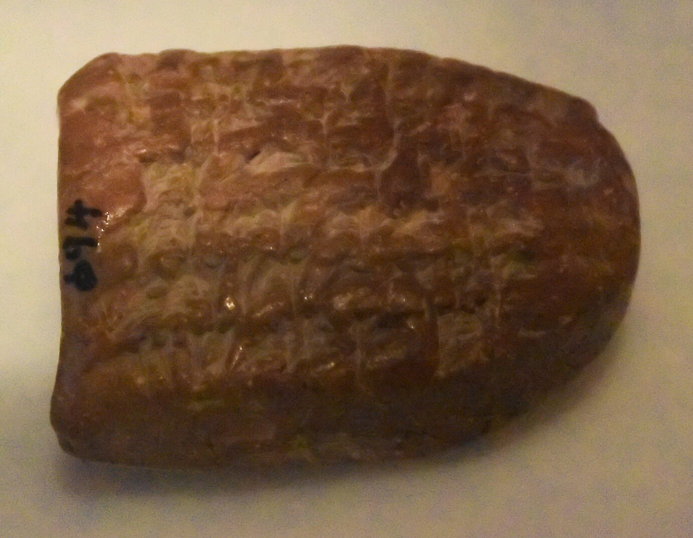
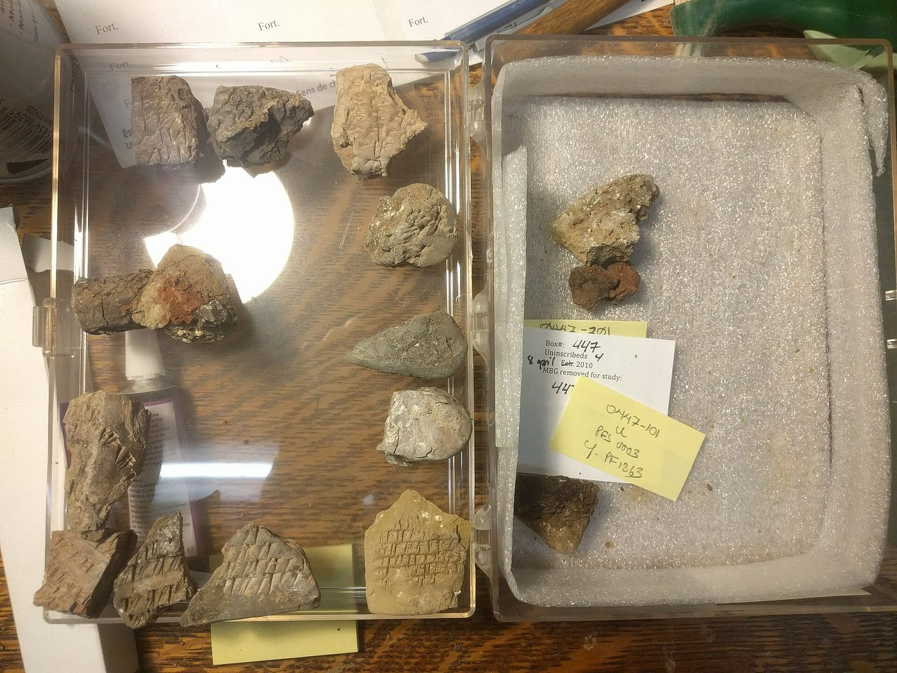
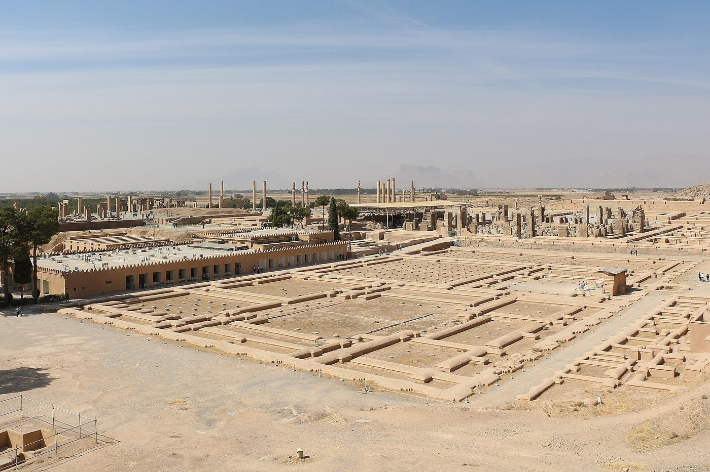
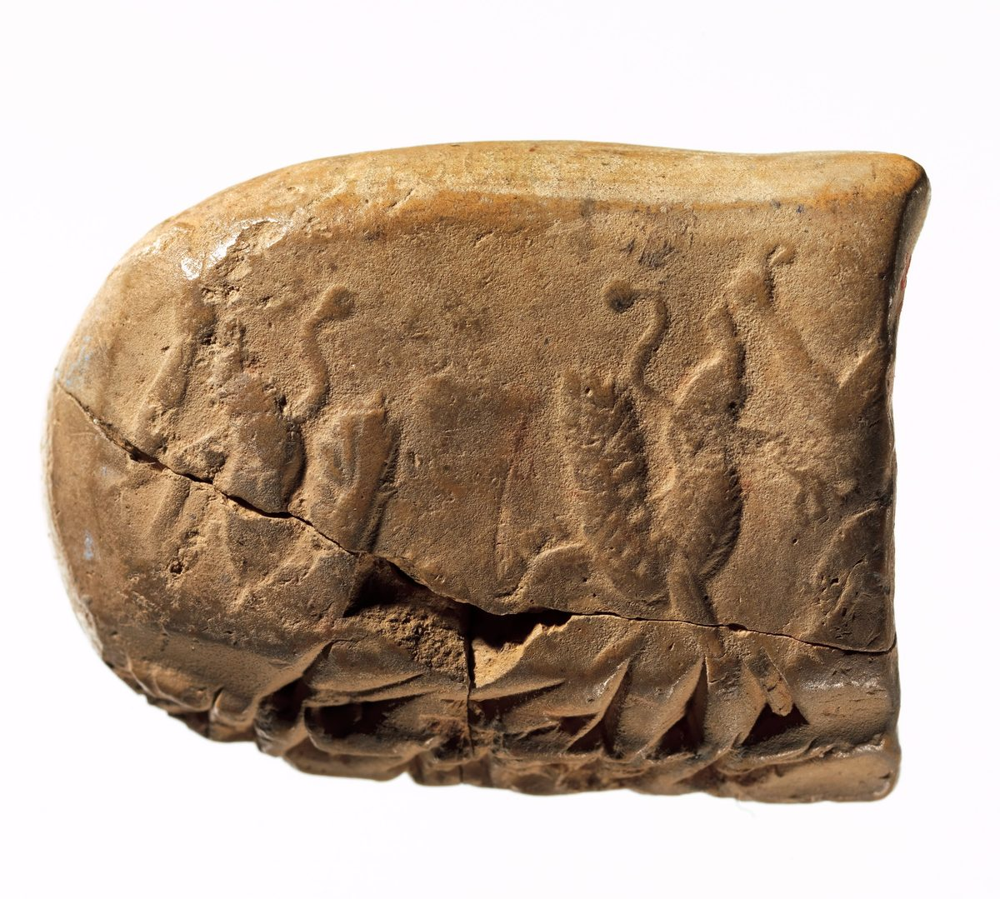
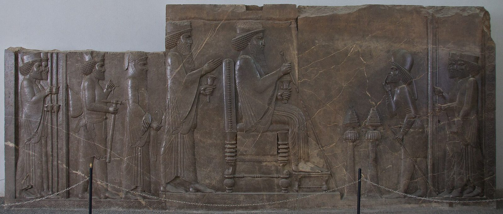

Unit 2 · Persepolis · Lesson 11
A centre of Persian power II: the Fortification and Treasury tablets
Was Persepolis a stage for royal ceremonies, or a working capital? What thousands of small clay tablets reveal.
Year 11 Ancient History · Present with → or space · Read on a phone with R

Review · books closed · 6 minutes · press K for the timer
Six questions from Lessons 1–10
- Why was Fars (Pārsa) a significant place for Darius to build Persepolis? Fars was the homeland of the Persians and of the Achaemenid royal family (Cyrus’s capital, Pasargadae, is nearby), so a capital there tied the king’s power to his own people’s land.
- What does the Audience relief show, and where was it found? An enthroned king (often identified as Darius I) receives an official, with a figure often identified as the crown prince behind him. Made for the Apadana stairways, it was found in the Treasury.
- Writing · integrate this dropped quotation from DSf, Darius’s building inscription from Susa, into one sentence with a signal phrase and the reference: Many peoples worked on the palace. “The stone-cutters who wrought the stone, those were Yaunâ and Lydians.” For example: As Darius’s Susa charter records, the stone was worked by “Yaunâ and Lydians” (DSf), which suggests that he presented his palace as the work of many peoples. (Signal phrase · only the words that matter, woven into your sentence · the reference · what it suggests. Yaunâ = Greeks.)
- In DPd, what does Darius ask Ahuramazda to protect Persia from? “from invaders, from famine, and from the Lie” (Livius translation).
- Who are the throne-bearers, and where can you see them? Figures standing for the empire’s subject peoples, holding up the king’s throne platform: on the doorways of the Hall of a Hundred Columns and on Darius’s tomb at Naqsh-e Rustam.
- What is Margaret Cool Root’s argument about the throne-bearer motif? Root (1979): the king carried by his subject peoples presents an ideal of hierarchical order, an empire holding up its king. It is power displayed, which is not the same as evidence of how power was exercised.
Mark your own answers in a different colour. Which question did you find hardest?
Learning intentions and success criteria · 2 minutes
Today’s goals
- analyse what the tablets reveal about Persepolis as a centre of power
- evaluate rival interpretations of what Persepolis was for
- explain what the Fortification and Treasury Tablets record
- compare the perspective of administrative and royal sources
- take and justify a position on the ‘ceremonial or working capital’ debate
Syllabus outcomes: AH-11-03 explains the role and significance of forces, features, events, individuals and groups in shaping the past · AH-11-05 analyses different types of sources for evidence to support a historical account or argument · AH-11-06 explains differing interpretations and representations of the past · AH-11-07 communicates historical understanding, applying historical knowledge, terms and concepts. Life Skills: AH-LS-08 uses sources to form conclusions about the past · AH-LS-09 identifies different interpretations of the past.
Note-making · the same routine as always
How to structure your notes
questions and key terms, written after
short phrases, arrows (→ leads to), abbreviations (PF = Persepolis Fortification text; PT = Persepolis Treasury text)
- 1Rule up the page firstTitle and date at the top; a cue column about a quarter of the page wide; room for a summary.
- 2Listen and look, then writeDon’t copy while something is being explained. Give every tablet its number and date (PF 1383, about 498 BCE).
- 3Write your own notes at each ✎ checkpointThen compare with the model notes, one row at a time. Add what you missed in a second colour.
- 4Write the cue questions afterwardsUse exam verbs: explain, analyse, assess. To revise, cover your notes and answer the cues.
- 5Finish with a three-sentence summaryTwo checkpoints today: reading the tablets · ceremonial stage or working capital?
Key vocabulary · add to the unit word wall
Words for reading the tablets, and for the debate
| The tablets | Meaning |
|---|---|
| Fortification Tablets | Tens of thousands of clay tablets (509–493 BCE) recording rations, workers and travel, found in 1933 in the fortification wall. |
| Treasury Tablets | Clay tablets (about 492–458 BCE) found in the Treasury, recording payments to workers, partly in silver. |
| Elamite | The language of Elam (south-west Iran), used by Persian administrators for most of the Persepolis tablets. |
| Ration | A fixed amount of food or drink given as payment or support. |
| Archive | A collection of records kept by an organisation; here, the records of the administration at Persepolis. |
| Reading and debating them | Meaning |
|---|---|
| Seal | A small carved stone rolled or pressed onto the clay, to show who supplied, received or approved something. |
| Authorisation | Official permission to receive something; often a sealed document from the king or a high official. |
| Nowruz | The Persian New Year festival; some scholars have argued Persepolis was built for it, others find no evidence. |
| Ideology | A set of ideas used to explain and justify power. |
| Interpretation | A historian’s explanation or judgement about the past, based on evidence. |
1 · Two archives · I do — who wrote them, for whom, and why they survived
Two archives from one terrace
Hundreds Probably thousands business Tablets Elamite Discovered On Terrace Herzfeld
Ernst Herzfeld to James Henry Breasted (Oriental Institute, Chicago), received 4 March 1933 · text: Persepolis Fortification Archive Project
The Fortification Tablets

- Found: March 1933, in two rooms of the fortification wall, north-east corner (Herzfeld’s team)
- Dates: 509–493 BCE, under Darius I
- How many: tens of thousands of tablets and fragments · mostly Elamite, about 800 in Aramaic
- Record: grain, flour, wine, beer, animals: rations for workers, officials and travellers; offerings to gods
The Treasury Tablets

- Found: 1936–38, in rooms of the Treasury, in the south-east of the terrace (Schmidt’s team)
- Dates: about 492–458 BCE
- How many: 746 tablets and fragments · Elamite (one in Akkadian)
- Record: payments partly in silver to workers and craftsmen, instead of food or as well as it
Unbaked clay is fragile. How did these records survive for 2,400 years?
Fortification Tablets: they seem to have been put away on purpose in rooms of the wall that were sealed off in ancient times. Treasury Tablets: every one shows signs of fire or great heat. The burning of Persepolis in 330 BCE baked them hard, probably by accident, though it may also have shattered many.
Images: Pfa16 (CC BY-SA 4.0) · Bernard Gagnon (CC BY-SA 4.0). Full details on the last slide.
1 · Two archives · I do — from the storehouse to the archive
How a ration was authorised, sealed and checked
- 1AuthoriseOfficials set who may draw rations, and how much; travellers carry a sealed document from the king or a high official.
- 2Hand outA supplier at a storehouse, road station or work site gives out the grain, flour, wine or animals.
- 3RecordA scribe writes a small clay tablet, usually in Elamite; supplier and receiver press or roll their seals on it.
- 4CollectThe tablets from across the region are taken to the offices at Persepolis.
- 5CheckAccountants copy them into journals and accounts, and store them in the archive.

Tablets sealed by supplier and recipient went back to Persepolis as a record of the transaction.
D. M. Lewis, “The Persepolis Fortification Texts” (1990), as quoted on ISAC’s page for Hallock’s edition
So who wrote the tablets, and for whom?
Scribes of the administration, for officials and accountants checking that every ration was spent as ordered: working records, not texts for the public, the king’s guests or us.
1 · Two archives · I do — think aloud: who, what, how much, authorised by whom?
Reading one tablet: a journey from Susa to India
1.25 BAR (of) flour, supplied by Mirayauda, Aššara(?) received, and he himself received 2 QA, and 1 man received 1½ QA, and 9 boys received each 1 QA. He carried a sealed document of the king. They went from Susa to India. 23rd year, twelfth month.
PF 1383 · clay tablet in Elamite · the 23rd year of Darius I, twelfth month (about 498 BCE) · trans. R. T. Hallock, Persepolis Fortification Tablets (1969), p. 390
BAR = 10 QA · QA = about a litre · (?) = the reading is uncertain · boys = subordinates, not necessarily children (Hallock) · 1.25 BAR = damaged on the tablet; restored by the editor
Who received it, and how much each? A party of eleven led by Aššara(?): 2 QA for him, 1½ for one man, 1 each for nine ‘boys’ (subordinates). Rank sets the ration.
What, and how much in all? 1.25 BAR (12½ QA) of flour, a total the editor restored from the amounts given to each person: probably one day’s food for the party, at a supply station on the road.
Authorised by whom? The king himself: the leader carried his sealed document. Mirayauda supplied the flour.
Where, and when? On the road from Susa towards India, in the 23rd year of Darius I (about 498 BCE).
What can it not tell us? Why they went to India, what they carried, what they believed, or anything about ceremonies at Persepolis.
2 · Reading the tablets · We do — in pairs · 5 minutes · press K for the timer
What does a tablet tell us? Two more texts
107 (BAR of) grain, supplied by Turpiš from (the place) Kurištiš, Cappadocian workers subsisting on rations received as rations (at) Baktiš, (for) 1 month. First (month), 23rd year. 19 men 3. 6 boys 1. 19 women 2. 6 girls 1. Total 50 workers.
PF 850 · Elamite · first month of the 23rd year of Darius I (about 499 BCE) · trans. R. T. Hallock (1969), p. 244 · Cappadocia = a province in central Anatolia (modern Türkiye) · 19 men 3 = 19 men, 3 BAR each · the total, 107, is damaged on the tablet and restored by the editor
32 BAR (of) grain, supplied by Ašbašuptiš, Šedda the hatarmabattiš (at) Persepolis, for whom Abbateya sets the apportionments, received, and gave (it as) kamakaš to post partum Ionian women (at) Persepolis, irrigation(?) (workers), whose apportionments are set by Abbateya and Miššabadda. 9 women (who) bore male children received (each) 2 BAR, and 14 women (who) bore girls received each 1 BAR. Twelfth month, 22nd year.
PF 1224 · Elamite · twelfth month of the 22nd year of Darius I (about 499 BCE) · trans. R. T. Hallock (1969), p. 349 · hatarmabattiš = an official’s title · kamakaš = a special payment (exact meaning uncertain) · post partum = who have just given birth · Ionian = probably Greek-speaking (Hallock)
- Who received it?
- What, and how much?
- Who supplied or authorised it?
- When, and where?
- What does it show about Persepolis?
- What can it not tell us?
2 · Reading the tablets · We do — check your answers · cold call a pair before each row
Check the question sheet
| Question | PF 850 · workers | PF 1224 · mothers |
|---|---|---|
| Who received it? | 50 Cappadocian workers at Baktiš: 19 men, 19 women, 6 boys, 6 girls | 23 Ionian women at Persepolis who had just given birth, described as “irrigation(?)” workers (the word is uncertain) |
| What, and how much? | 107 BAR of grain (a total restored by the editor) for one month: 3 BAR for each man, 2 for each woman, 1 for each boy and girl | 32 BAR of grain: 2 BAR for each mother of a boy, 1 BAR for each mother of a girl |
| Supplied or authorised? | supplied by Turpiš, from the place Kurištiš | supplied by Ašbašuptiš; handed out by the official Šedda; amounts set by Abbateya and Miššabadda |
| When, and where? | first month of Darius’s 23rd year (about 499 BCE), at Baktiš | twelfth month of his 22nd year (about 499 BCE), at Persepolis |
| What it shows | workers from a distant province, fed on a fixed scale for men, women, boys and girls; elsewhere some women, probably supervisors or skilled workers, received more than any man (Hallock; Brosius) | the administration paid extra to new mothers, twice as much for a boy |
| What it can’t tell us | what work they did, whether they came by choice, how they lived | why boys counted for more, how the mothers saw it, anything about ceremonies |
2 · Reading the tablets · We do — the whole class · different perspective, different purpose
The king’s view and the storehouse view

| Royal sources: DPd, the Audience relief, the throne-bearers | Administrative sources: the tablets | |
|---|---|---|
| Made by, for whom | the king’s carvers and scribes, for gods, visitors and future kings | scribes and officials, for the accountants checking the stores |
| Purpose | to show the king’s rule as god-given and willingly accepted (ideology) | to account for every BAR of grain and jar of wine |
| Power is | displayed: the king enthroned and carried by his peoples; Darius asks Ahuramazda to protect Persia “from invaders, from famine, and from the Lie” | exercised: rations fixed by rank, travel by sealed document, workers from many lands fed and counted |
| Leaves out | the cost, the workers, anything that went wrong | motives, beliefs, ceremonies, and what the king intended |
One empire, two views. On his tomb Darius lists Cappadocia among the lands that “bore tribute to me”; PF 850 shows fifty Cappadocian workers drawing grain at Baktiš. The royal source tells us what the king claimed; the tablet suggests what rule over distant lands could mean on the ground, though it does not say why these Cappadocians were working in Persia.
Notes checkpoint 1 of 2
Reading the tablets
3 · What was Persepolis for? · You do — the debate
Ceremonial stage or working capital?
Ernst Herzfeld (1941), followed by other scholars into the 1960s, argued that Persepolis was built for the New Year festival, Nowruz. On this view, the delegations on the Apadana stairways bring their gifts to the king at the festival.
Some still defend it: the Encyclopaedia Iranica entry by A. Sh. Shahbazi says the case “cannot be taken lightly”.
Livius.org thinks a gift-giving festival in the Apadana “very likely”, but adds that “there is no hard evidence for the date of its celebration”.
Critics of the theory (Nylander, 1974; Calmeyer, 1980; Ali Mousavi) find no evidence that Nowruz was celebrated in the Achaemenid period at all.
The tablets show an administration at work month after month: rations for workers and mothers, travellers on the king’s business, payments in silver.
No ancient writer says that Persepolis was built for Nowruz.
Do we have to choose one?
No: a ceremonial centre can also be a working one. The debate is about degree: what was Persepolis mainly for? That is why you will stand on a line, not in a corner.
3 · What was Persepolis for? · You do — cold call · what does a silence mean?
Herodotus never names Persepolis
… that Susa where the great king lives and where the storehouses of his wealth are located.
Herodotus, Histories 5.49, about 430 BCE · a Greek, Aristagoras, describes the Persian Empire to the king of Sparta · trans. A. D. Godley (Loeb, 1920–22), as revised by the Perseus Digital Library
The name, however, does not occur in the writings of Herodotus, Ctesias, Xenophon, or Nehemiah, who were well acquainted with the other principal cities of the Persian empire, and who make frequent mention of Susa, Babylon, and Ecbatana. But this may be accounted for by the fact, that Persepolis never appears to have been a place of residence for the Persian kings, though it was regarded as the capital of their empire in the remotest ages.
Edward Farr, History of the Persians (New York: Robert Carter & Brothers, 1850)
Herodotus wrote about 430 BCE, while Persepolis was in use. What might his silence mean?
Greeks knew Susa as the king’s city, at the end of the Royal Road; Persepolis lay deep in the Persian homeland, probably off the routes they knew.
Farr (1850) thought the kings never lived there, so Greeks had little reason to name it. He wrote before the tablets were found (1933); they show Persepolis was the hub of a busy administration, not a minor place.
An argument from silence is weak: it shows what one Greek writer knew or chose to write about, not what Persepolis was.
3 · What was Persepolis for? · You do — opinion continuum · 5 minutes · press K for the timer
Where do you stand?
- Stand on the line (or place your name card) where your judgement is.
- Justify your spot with two pieces of evidence, named precisely.
- Say what would make you move.
“I stand near … because … and … . I would move if …”
Evidence you have met
Why might scholars between the 1930s and 1970s have found the Nowruz theory attractive? What would count as evidence for or against it?
I stand about two-thirds of the way towards ‘working capital’. The Fortification Tablets record rations month after month, and travellers like those in PF 1383 drew food on the king’s sealed document; but the Apadana and the Audience relief show that the terrace was also built to stage royal audiences. I would move towards ‘ceremonial stage’ if an ancient text linked the gift-bearers to a yearly festival.
Notes checkpoint 2 of 2
Ceremonial stage or working capital?
3 · What was Persepolis for? · You do — check first · gesture vote: one finger = A · two fingers = B
Which sentence compares the two sources?
Contrast or concession? whereas sets two sources side by side as different; although gives ground on one point, then makes your main one: “Although the Audience relief was made for the Apadana stairways, it was found in the Treasury.”
B links the two sources with a comparative connective (whereas), says when each writer wrote, and says what each makes of the silence. A puts two facts side by side without comparing them.
Comparative connectives and precise terms
3 · What was Persepolis for? · You do · 8 minutes · press K for the timer
What do the tablets reveal about Persepolis as a centre of Persian power?
Verb what … reveal: analyse what the tablets show and how · Topic Persepolis as a centre of power · Limits the tablets, compared with one royal source · Do an answer first, two tablet texts by number, a comparison, one limit.
- Open with your answer to the question.
- Use two tablet texts as evidence, by number (PF 850 …).
- Compare them with one royal source (whereas, by contrast).
- Finish with one thing the tablets cannot tell us.
two tablet texts · one royal source · a comparative connective · archive, ration or authorisation · a hedge (probably, suggests, likely) · one limit of the evidence
The tablets reveal that Persepolis was … · For example, PF … shows that … · Similarly, PF … records … · Whereas the … presents …, the tablets show … · However, the tablets cannot tell us … because …
End with a sentence that weighs the Nowruz theory: how far do the tablets weaken it?
3 · What was Persepolis for? · You do — compare with a model · two students read theirs first
A model paragraph
The Fortification and Treasury Tablets reveal that Persepolis was a working centre of Persian power, not only a stage for royal display. They show power exercised through a precise administration: in PF 1383 a travelling party drew flour because its leader “carried a sealed document of the king”, and in PF 850 fifty Cappadocian workers received monthly grain rations on a fixed scale of 3 BAR for each man and 2 for each woman. This archive therefore suggests that the king’s authority reached from the road to India to work groups across the region, with rations authorised, sealed and checked at Persepolis. Whereas the Audience relief displays a king whose power is calmly accepted, the tablets record how that power fed, moved and apparently rewarded people, paying extra grain to new mothers (PF 1224). By contrast with the royal sources, however, the tablets were never meant to explain what Persepolis meant: they cannot show the ceremonies held there, and they cover only part of one administration in 509–493 BCE, so they make it likely, but not certain, that its work mattered as much as its ceremonies.
Finish your notes If time · or at home
Summary: three sentences
- What do the Fortification and Treasury Tablets record?
- How are they different from the royal sources?
- What do they suggest about the ‘ceremonial stage or working capital’ debate?
The Fortification Tablets (509–493 BCE) record food for workers, officials and travellers, and offerings to gods, across the region run from Persepolis, and the Treasury Tablets (about 492–458 BCE) record payments partly in silver to workers and craftsmen. Unlike the royal reliefs and inscriptions, which display the king’s power for gods, visitors and future kings, the tablets are working records that show that power exercised, ration by ration. They suggest that Persepolis was a working capital as well as a ceremonial stage, although they cannot show what ceremonies were held there.
Check for understanding · hinge question · hold up your A, B, C or D card on “3, 2, 1, show”
The Fortification Tablets are especially valuable because they …
- Awere written for the public, to show visitors the power of the king
- Brecord the everyday administration that the royal reliefs leave out
- Cdescribe the New Year festival that some scholars see in the reliefs
- Dgive the view of Greek visitors who watched the palace at its work
A describes the reliefs, not the tablets: the tablets were working records for officials and accountants. C is wrong: no tablet describes a New Year festival, and the Nowruz theory has no ancient text behind it. D is wrong: they were written by the Persian administration’s scribes, mostly in Elamite; only one tablet is in Greek.
Exit ticket · 5 minutes · before you leave
Finish the sentence
“The best evidence that Persepolis was more than a ceremonial stage is … because …”
A named piece of evidence (a tablet by number, or the Treasury Tablets’ silver payments), what it shows (rations, travel or payments organised month after month), and why that matters: an administration at work all year means Persepolis was more than a place for occasional ceremonies. The best answers add a hedge: the tablets show it was more than a stage, not that there were no ceremonies.
Then check yourself against today’s three “I can” statements. Next lesson: the burning of Persepolis in the ancient accounts.
Practice and review · 1 of 4 · true, false, justify
True or false? Justify your answer
- 1The Fortification Tablets were found in the Treasury. False — they were found in 1933 in two rooms of the fortification wall; the Treasury Tablets were found in the Treasury (1936–38).
- 2Most of the Fortification Tablets are written in Elamite. True — about 800 are in Aramaic, and there are single tablets in Greek, Old Persian and other languages.
- 3The Treasury Tablets record payments partly in silver. True — to workers and craftsmen, about 492–458 BCE, instead of food or as well as it.
- 4In PF 1224, the mothers of girls received more grain than the mothers of boys. False — mothers of boys received 2 BAR and mothers of girls 1 BAR; Hallock found boys’ mothers always received twice as much.
- 5An ancient writer tells us that Persepolis was built for the New Year festival. False — no ancient text says so; the Nowruz theory is Herzfeld’s (1941), and it is debated.
- 6Because the tablets are dry administrative records, they are useless for understanding royal power. False — reliable for what? They are strong evidence of how power was exercised, though weak evidence of what the king intended or believed.
Practice and review · 2 of 4 · a Treasury tablet · writing
Read a Treasury tablet
(To) Shakka speak, Baradkama says: 3 karsha and 2 shekels (and) a half of a shekel, silver, (to) Haradkama, his name, an Egyptian wood-worker (and) chief-of-hundred, (who) is earning wages at Parsa … give him. Sheep and wine (serve) as the equivalent (of the money): 1 sheep for 3 shekels, 1 jug (of wine) for 1 (of) the same. … 1 man, per month, 6 shekels and a half of a shekel is to receive.
PT 1 · Elamite · for the 8th to 12th months of the 32nd year of Darius I (about 490/489 BCE) · trans. G. G. Cameron, Persepolis Treasury Tablets (1948), p. 83 · Shakka = the treasurer · Parsa = Persepolis · 1 karsha = 10 shekels
In one or two sentences: what does PT 1 show about how workers at Persepolis were paid?
PT 1 shows that a skilled worker at Persepolis, an Egyptian woodworker in charge of a hundred men, was owed wages counted in silver (6½ shekels a month for five months), but was to be paid in sheep and wine at fixed rates. Silver measured the value, while payment in kind went on.
Finish: “PT 1 is reliable for … but not for … because …”
PT 1 is reliable for how one worker’s pay was calculated and authorised at Persepolis in about 490 BCE, but not for how typical his pay was or how he lived, because it is a single order kept for the treasury’s accounts.
Join these into one sentence with whereas or although, and say which job your connective does: PT 1 records one worker’s pay at Persepolis. It cannot show how typical his pay was.
Although PT 1 records one worker’s pay at Persepolis, it cannot show how typical his pay was. (A model, written for this lesson: although grants one point, what PT 1 does record, then makes the main one, its limit: that is concession; whereas would set two different things side by side.)
Practice and review · 3 of 4 · extension
Evaluate the Nowruz theory
Evaluate the Nowruz theory. Why might scholars between the 1930s and 1970s have found it attractive, and what would count as evidence for or against it?
what the Apadana reliefs look like · what had been published, and when · what kind of text or tablet would settle it · what the tablets do record
The Nowruz theory was attractive to scholars from Herzfeld (1941) to the 1960s, and some still defend it, because the Apadana reliefs seem to show one great occasion, with delegations from across the empire bringing gifts to the king, and Nowruz was still Iran’s great spring festival. Until Hallock published the Fortification texts in 1969, most of the administrative records were unpublished, so the ceremonial halls dominated the picture of the site. Evidence for the theory would be an ancient text linking the gift-bearers to the New Year, or tablets showing deliveries and visitors gathered at the spring equinox. The evidence against it is stronger: no ancient text supports it, some scholars find no sign that Nowruz was celebrated in the Achaemenid period at all, and the tablets record an administration at work month after month. The theory is therefore best treated as a possible reading of the reliefs, not as proof of what Persepolis was for.
Practice and review · 4 of 4 · cover your notes and answer from memory
Quick checks
- Where and when were the Fortification Tablets found, and what years do they cover? In March 1933, in two rooms of the fortification wall at the north-east corner of the terrace; 509–493 BCE.
- What do the Treasury Tablets record? Payments partly in silver to workers and craftsmen, about 492–458 BCE, instead of food or as well as it.
- How was a ration authorised and recorded? A sealed document authorised it; a supplier handed it out; a scribe wrote a tablet sealed by supplier and receiver; the tablets were collected and checked at Persepolis.
- What did PF 1224 record about mothers? Extra grain for Ionian women at Persepolis who had just given birth: 2 BAR for the mother of a boy, 1 BAR for the mother of a girl.
- Compare the perspective of royal and administrative sources. Royal sources display the king’s power for gods, visitors and future kings; the tablets record power exercised, for the accountants who checked the stores.
- Why is the Nowruz theory debated? Herzfeld’s theory (1941) has no ancient written support, some scholars find no evidence of Nowruz in the Achaemenid period, and the tablets show an administrative centre working all year.
Sources and credits
Where everything comes from
Ration texts PF 850, 1224 and 1383: R. T. Hallock, Persepolis Fortification Tablets (Chicago: Oriental Institute, 1969), pp. 244, 349, 390, from the free edition published by ISAC, University of Chicago (CC BY-NC-ND 4.0; quoted briefly for teaching). PT 1: G. G. Cameron, Persepolis Treasury Tablets (Chicago, 1948), p. 83, from ISAC’s free edition (quoted briefly).
D. M. Lewis, “The Persepolis Fortification Texts” (1990), as quoted on ISAC’s page for Hallock. The 1933 telegram: Persepolis Fortification Archive Project. Facts: M. Tamerus, “Archives from the Achaemenid heartland” (University of Münster); West Semitic Research Project, USC; Encyclopaedia Iranica, “Persepolis” (A. Sh. Shahbazi) and “Persepolis Administrative Archives” (W. F. M. Henkelman, C. E. Jones and M. W. Stolper), read in Wayback Machine copies (the live site blocks automated access); M. Brosius, Women in Ancient Persia (Oxford, 1996), as reviewed by L. Roller, BMCR 1996.08.06; M. C. Root, The King and Kingship in Achaemenid Art (1979), p. 161 (paraphrased).
DPd, DSf and DNa, and the Apadana and Treasury pages: Livius.org (© Livius.org; quoted briefly for teaching). Herodotus, Histories 5.49: A. D. Godley’s translation (Loeb, 1920–22), as revised by the Perseus Digital Library (CC BY-SA 3.0 US). Edward Farr, History of the Persians (New York: Robert Carter & Brothers, 1850; public domain), from the Internet Archive.
Teacher resources (class notebook): 08 The Treasury and the Hall of a Hundred Columns, 09 The Centre of Power, Why Darius Built Persepolis; NSW Department of Education, Persepolis teaching support resource (Source 19, Farr).
Outcomes and content: NSW Education Standards Authority (NESA), Ancient History 11–12 Syllabus (2024). © NESA.
- A clay tablet in Elamite cuneiform from Persepolis (National Museum of Iran) · Photo: Dorieo · CC BY-SA 4.0 · source
- Persepolis Fortification Archive tablets in study boxes, Chicago · Photo: Pfa16 · CC BY-SA 4.0 · source
- The Treasury and the rebuilt ‘Harem’ from the south-east · Photo: Bernard Gagnon · CC BY-SA 4.0 · source
- Tablet impressed with seals, Achaemenid Elamite, from Qasr-i Abu Nasr (The Met, 36.30.62) · The Metropolitan Museum of Art, Rogers Fund, 1936 (Open Access) · CC0 1.0 · source
- The Audience relief from the Treasury (National Museum of Iran) · Photo: A. Davey · CC BY 2.0 · source
_-_MARQ.jpg){kind=link}


_(4734172156).jpg){kind=link}
All images are public domain or openly licensed, and were resized for the web (two tablets were also cropped). Each is shared under the licence shown.